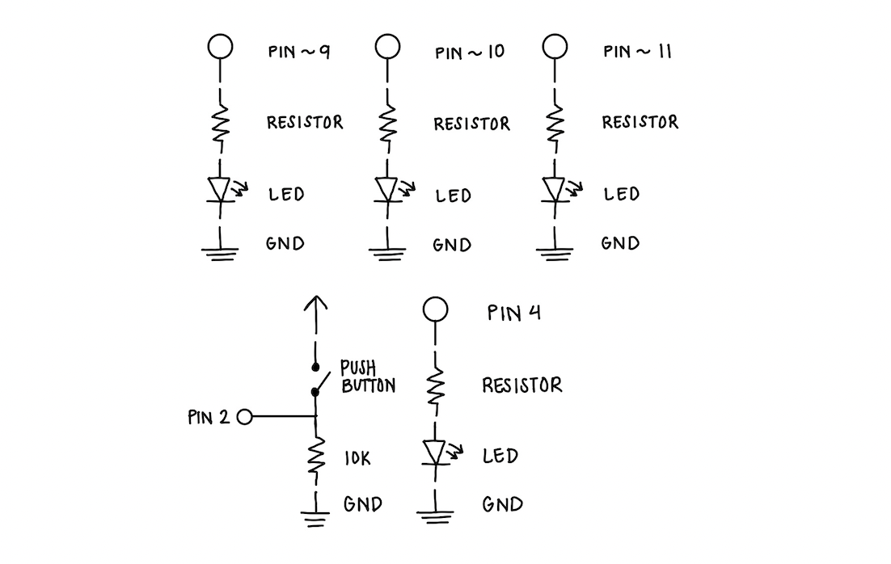
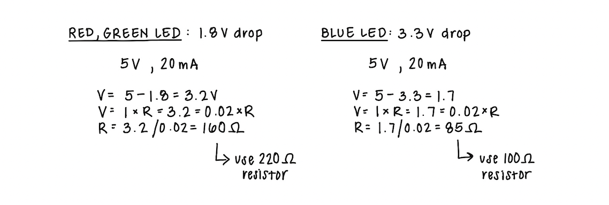
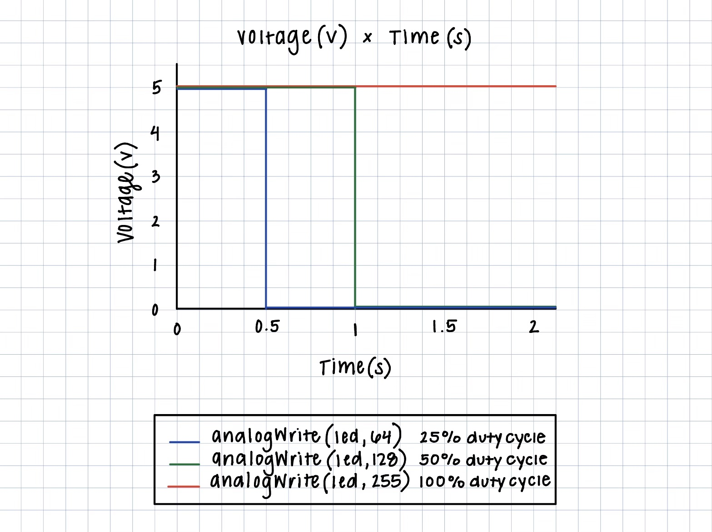
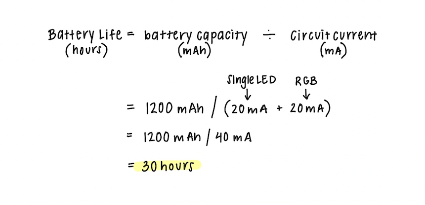
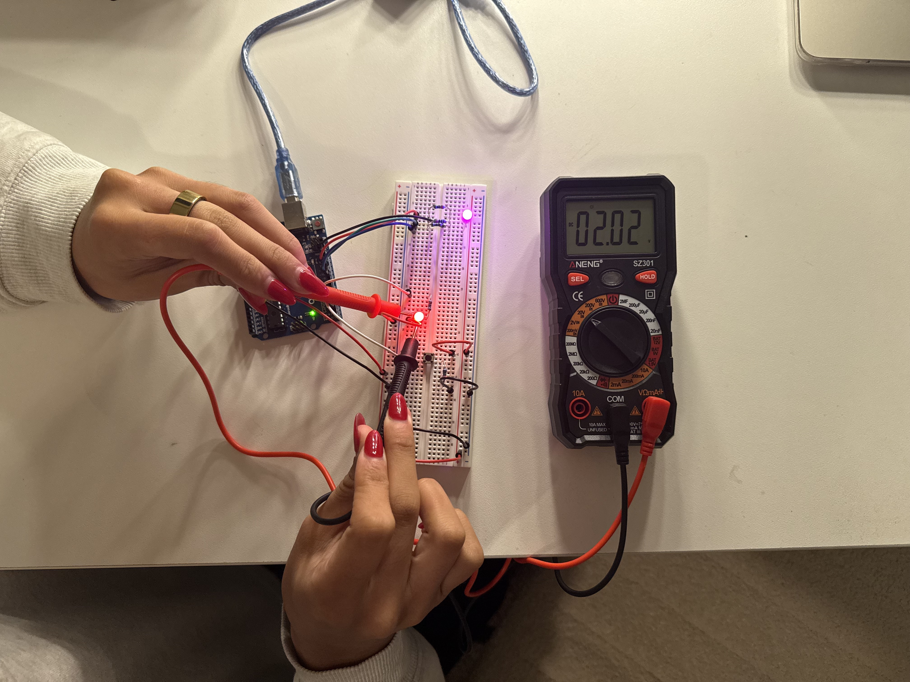

My Schematic
 Image of my schematic with labeled components, including pins, resistors, LEDs, pushbuttons,and ground.Resistance Calculation
 Image of my calculations for the resistance needed for my circuit. I used 220 ohm resistors for the red and green LEDs and a 100 ohm resistor for the blue LED.My Circuit
 Image of my physical circuit, "Fade", with all components connected.
Image of my physical circuit, "Fade", with all components connected.
My Firmware
/*
Button
Turns on and off a light emitting diode(LED) connected to digital pin 13,
when pressing a pushbutton attached to pin 2.
The circuit:
- LED attached from pin 13 to ground through 220 ohm resistor
- pushbutton attached to pin 2 from +5V
- 10K resistor attached to pin 2 from ground
- Note: on most Arduinos there is already an LED on the board
attached to pin 13.
created 2005
by DojoDave
modified 30 Aug 2011
by Tom Igoe
This example code is in the public domain.
https://docs.arduino.cc/built-in-examples/digital/Button/
*/
/*
Fade
This example shows how to fade an LED on pin 9 using the analogWrite()
function.
The analogWrite() function uses PWM, so if you want to change the pin you're
using, be sure to use another PWM capable pin. On most Arduino, the PWM pins
are identified with a "~" sign, like ~3, ~5, ~6, ~9, ~10 and ~11.
This example code is in the public domain.
https://docs.arduino.cc/built-in-examples/basics/Fade/
*/
// Button variables:
const int buttonPin = 2; // the number of the pushbutton pin
const int ledPin = 4; // the number of the LED pin
int buttonState = 0; // variable for reading the pushbutton status
// Fade variables:
int ledB = 9; // the PWM pin the blue LED is attached to
int ledG = 10; // the PWM pin the green LED is attached to
int ledR = 11; // the PWM pin the red LED is attached to
int brightness = 0; // how bright the LED is
int fadeAmount = 5; // how many points to fade the LED by
void setup() {
pinMode(ledPin, OUTPUT); // initialize the LED pin as an output:
pinMode(buttonPin, INPUT); // initialize the pushbutton pin as an input:
// Fade: declare pin 9, 10, 11 to be outputs:
pinMode(ledB, OUTPUT);
pinMode(ledG, OUTPUT);
pinMode(ledR, OUTPUT);
}
void loop() {
buttonState = digitalRead(buttonPin); // read the state of the pushbutton value
// check if the pushbutton is pressed. If it is, the buttonState is HIGH:
if (buttonState == HIGH) {
digitalWrite(ledPin, HIGH); // turn LED on:
// create a green to blue color fade effect with the RGB LED:
for (int i = 0; i <= 256; i++){ // loop from 0 to 256 to gradually change brightness of RGB LED
analogWrite(ledG, 256 - i); // decrease brightness of green LED
analogWrite(ledB, i); // increase brightness of blue LED
delay(20); // wait 20 milliseconds between each fade step
}
// create a blue to red color fade effect with the RGB LED:
for (int i = 0; i <= 256; i++){ // loop from 0 to 256 to gradually change brightness of RGB LED
analogWrite(ledB, 256 - i); // decrease brightness of blue LED
analogWrite(ledR, i); // increase brightness of red LED
delay(20); // wait 20 milliseconds between each fade step
}
// create a red to green color fade effect with the RGB LED:
for (int i = 0; i <= 256; i++){ // loop from 0 to 256 to gradually change brightness of RGB LED
analogWrite(ledR, 256 - i); // decrease brightness of red LED
analogWrite(ledG, i); // increase brightness of green LED
delay(20); // wait 20 milliseconds between each fade step
}
} else { // if the button is not pressed
digitalWrite(ledPin, LOW); // turn off single LED
digitalWrite(ledB, 0); // turn off blue LED
digitalWrite(ledG, 0); // turn off green LED
digitalWrite(ledR, 0); // turn off red LED
}
}
My Circuit's Operation
Video of my circuit in operation, with a fading RGB LED, red LED, and pushbutton.Additional Questions
1: Draw a chart where the X axis is time and the Y axis is voltage.
Draw 3 lines representing the voltage across an LED with analogWrite(led, 64), analogWrite(led, 128), and analogWrite(led, 255).

2: Given your schematic, circuit, and firmware,
assuming the only thing that draws current is your LEDs,
how long would your circuit run if powered by a 1200 mAh battery?
If powered by a 1200 mAh battery, my circuit would run for approximately 30 hours if the pushbutton is constantly pressed.
My circuit is using two LEDs: a single red LED, using 20 mA of current, and an RGB LED, using an average of 20 mA of current,
for a total of 40 mA of current.
Therefore, the battery life can be calculated as follows:

3: Measure and record the actual voltage across one of your LEDs when it's on.
How does this compare to the theoretical forward voltage for your LED color?
The actual voltage across my single red LED when it's on is approximately 2.02V, as measured with a multimeter.
This is very close to the theoretical forward voltage for a red LED, which is typically about 1.8V.

4: Did you use AI tools in completing this assignment?
If yes, please provide details on how/when, as well as a brief reflection.
If no, you can either leave this question blank, or provide other information if you'd like.
Answer